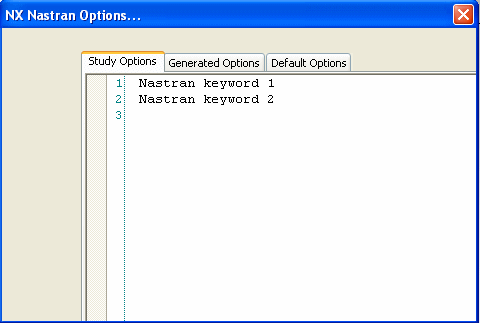

NX Nastran processing options
NX Nastran processing options overview
Solid Edge Simulation employs the NX Nastran solver to process your finite element analysis studies. Solid Edge Simulation gives you access to NX Nastran processing options in several ways:
-
Solid Edge Simulation automatically appends a set of keywords to a default .rcf file (SENastran*.rcf) provided with the setup. This file is written to the same location as the NX Nastran .dat file, which is a local .rcf file generated for each study.
To alter the study processing parameters, for example, to increase the memory allocation, edit the appropriate (SENastran*.rcf) file in the installation directory.
To learn more: Default SENastran*.rcf files.
-
Advanced users can define default NX Nastran solving options in an nastr.rcf file in their home directory: %HOMEDRIVE%%HOMEPATH%\nastr.rcf.
The local .rcf files are copied from the installation directory.
To learn more: Local .rcf files.
-
Advanced users can add command line keywords to the command line in the Advanced options (New Study command bar).
You can review and edit some of these processing options in the NX Nastran Keyword Editor.
Using the NX Nastran Keyword Editor
The NX Nastran Keyword Editor is a multi-tabbed text edit window for advanced users to review default processing options and to add and edit user-defined keywords and values to the Study Name.rcx file. This editor displays three tabs:
-
Study Options tab—Use this tab to enter and modify your own NX Nastran options for the active study. Keywords access NX Nastran processing options that are not available through the Solid Edge Simulation user interface. You can click in the box to type new keywords, and you can cut, copy, and paste using standard keyboard shortcut commands.
An example of how you can use the Study Options tab is to specify that you want the solver to ignore warning messages during processing. Consult the NX Nastran User Guide.pdf for a list of the keywords and values that are valid in .rc files.
-
Generated Options tab—Displays the options defined in Solid Edge on the New Study command bar, in the Solid Edge Options dialog box, and by other commands in the Solid Edge Simulation user interface. This tab is read-only.
-
Default Options tab—Shows the default options provided in the SENastran*.rcx file for each study type. This tab is read-only.

These three sets of keywords—Study Options, Generated Options, and Default Options—are joined to create the Study Name.rcx local file that is used as input when the current study is solved. These options are saved automatically with the study when you save the file or when NX Nastran runs.
Command line keywords
You can use the NX Nastran Command Line Options box in the Advanced options, Create Study (or Modify Study) dialog box to add keywords that are only permitted on the command line, such as dmparallel. You also can use the Command Line Options box to add any other supported command line keyword.
-
memory=size, to specify the amount of open core memory to allocate to a processing job.
-
sdirectory=pathname, to specify the directory to use for temporary scratch files created during the run. You must have read, write, and execute privileges to the directory.
Here are some NX Nastran basic command line keywords.
For information about command line keywords, see Appendix B, Keywords and Environment Variables, in the NX Nastran Installation and Operations Guide.pdf. This document is not delivered with Solid Edge Simulation.
Default SENASTRAN*.rcf files
Six default SENASTRAN*.rcf files are installed with Solid Edge in the C:/Program Files/Siemens/Solid Edge 2023/Simulation/Common/NXNastranRCFiles directory. These are text files which initially contain default processing parameters, such as memory allocation, scratch file directory, and whether to delete the database file after processing. The files in the installation directory are copied to the local .rcf files in the scratch directory when study processing begins.
If you want to alter the processing parameters, use a text editor to edit the appropriate SENASTRAN*.rcf file in the installation directory.
The six files are specific to the type of analysis being performed.
|
File name |
Analysis type |
|
SENASTRANBucklingPlate.rcf |
Buckling 2D |
|
SENASTRANBucklingTet.rcf |
Bucking tetrahedral |
|
SENASTRANModalPlate.rcf |
Modal 2D |
|
SENASTRANModalTet.rcf |
Modal tetrahedral |
|
SENASTRANStressPlate.rcf |
Stress 2D |
|
SENASTRANStressTet.rcf |
Stress tetrahedral |
Local .rcf files
Advanced users can define their own default NX Nastran options in their local environment: %HOMEDRIVE%%HOMEPATH%\nastr.rcf. Generally, you should do this to avoid command line strings that are too long to view and edit.
You can specify a different local file using the rcf command line keyword:
rcf=pathname
Precedence of duplicate keywords
If you enter a duplicate keyword with a different value, then the different values are evaluated in the following order, with number one representing the highest precedence:
-
NX Nastran statements in the input file, Study Name.rcx.
-
Keywords on the command line.
-
Local .rcf file.
-
User .rcf file.
How do I
Set units for .modfem files opened in FemapSave a study to Femap
Learn more
FEA processing resourcesFEA architecture and files
Saving FEA documents
Setting units for files opened in Femap
Look up more details
Simulation Progress dialog boxNX Nastran basic keywords
NX Nastran processing errors
NX Nastran Solve Error dialog box
Save Femap Model File dialog box